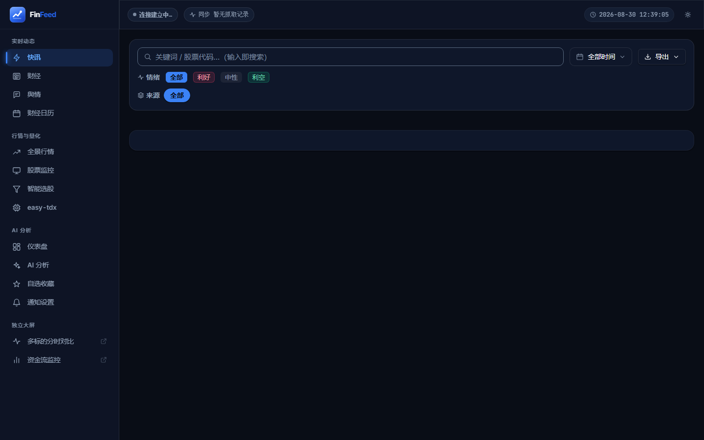
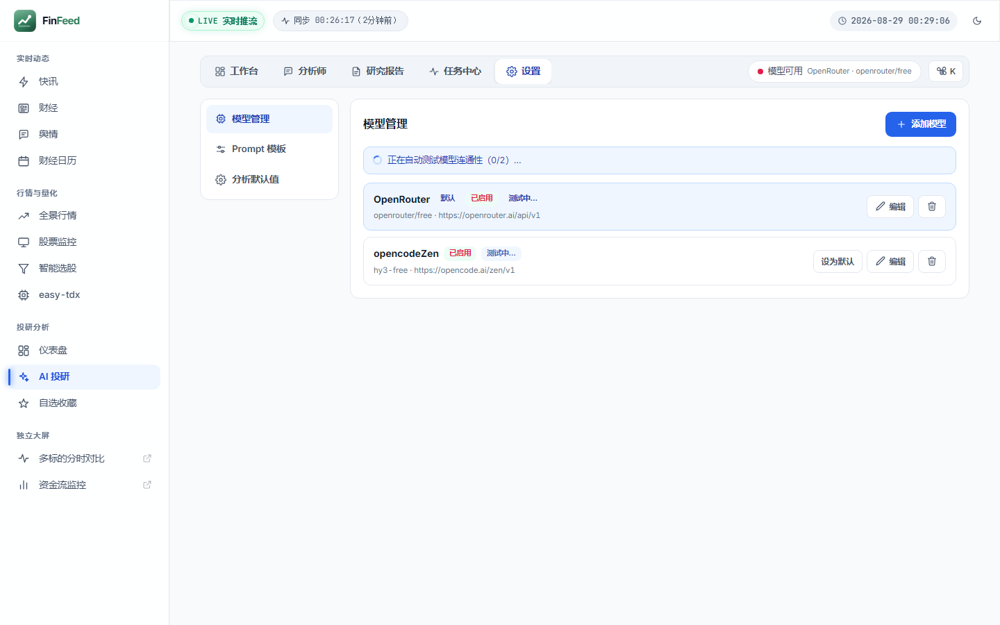
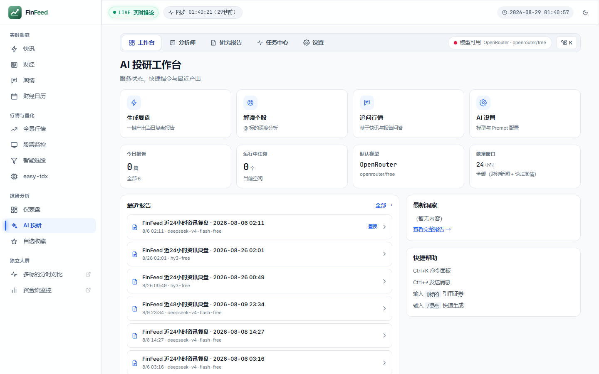
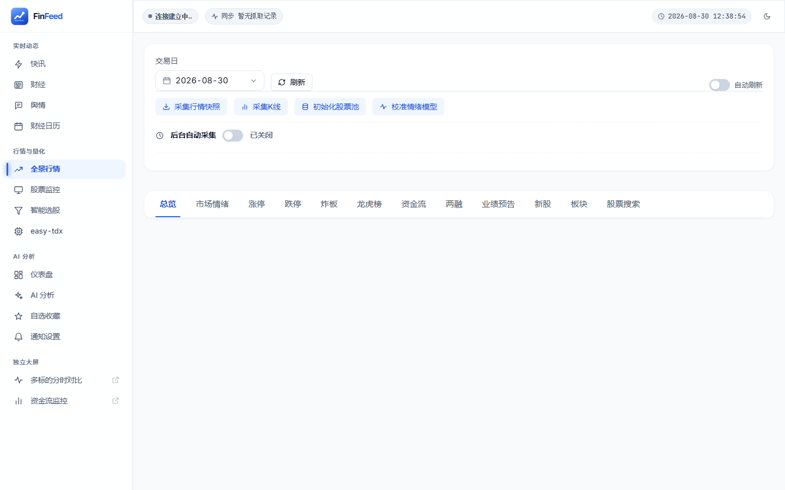
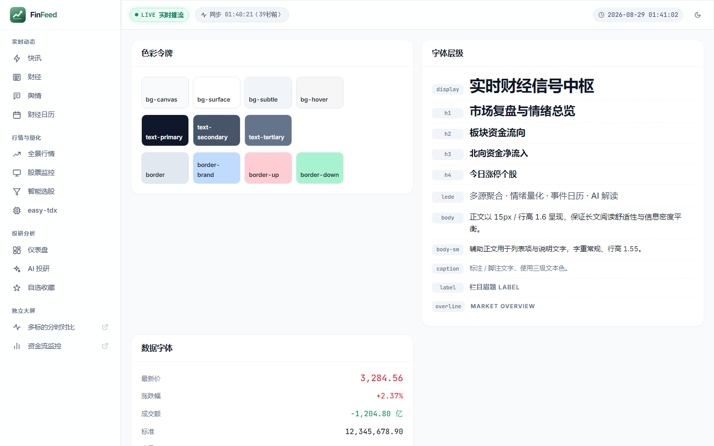

对 Vue 3 + Vite 前端的 6 个维度系统性体检：页面结构、组件、动效、图标、布局排版、色彩字体。结论基于源码静态分析 ＋ 14 张实机截图的可视化验证，附 5 个可复现的审计脚本。
transition: all（22 → 0）。data-theme」推断深色模式全面失效，实机验证显示主应用 7 个核心页暗色渲染正常，失效仅集中在 AI / Screener / easy-tdx 三模块；AI 模块品牌色冲突的视觉危害亦低于初判。<button>。
详见 web/DESIGN_SYSTEM.md §10 技术债清单。
FinFeed 的设计系统「设计」得相当好，「落地」程度则因模块而异。tokens.css 是一份 614 行、318 个令牌的高质量规范，主应用核心页（快讯、财经、仪表盘、全景行情）已能消费这套令牌，暗色模式与对比度均正常。问题集中在 AI 投研、智能选股、easy-tdx 等模块：它们大量绕过令牌、直接写死颜色与尺寸，成为「规范外的孤岛」。
.ff-btn 状态完整，但 43 个文件含 150 处自写 <button>，AI/Screener/easytdx 另起炉灶。transition: all 已清零（22→0），时长/缓动令牌化，已尊重 prefers-reduced-motion。<svg>，只剩 2 处 emoji。.ff-page/.ff-page__header/.ff-grid 使用率仍极低。按「影响面 × 修复成本」排序。这五项解决了，界面一致性会有肉眼可见的跃升。
| 来源 | 声明/使用的品牌色 | 说明 |
|---|---|---|
DESIGN_SYSTEM.md §3.1 | #2f7d5b（Forest 绿） | 文档声明的主色 |
tokens.css 原始色板 | #2f7d5b（--p-brand-600） | 仅被引用 13 次，近乎废弃 |
tokens.css 语义令牌 | #2563eb / #3b82f6（蓝） | --ff-brand 实际生效值 |
| AI 模块（6 视图 + 6 组件） | #2f7d5b（60 次） | 硬编码绿 + Tailwind 灰阶 |
AI 模块自成一套灰阶：#9ca3af（50 次）、#e5e7eb（46 次）、#6b7280（37 次）、#1f2937（30 次），与主应用的 Cool Graphite 灰阶不一致。
--p-brand-* 与语义层脱钩，色板演进失去意义。Step 1 — 先裁决品牌色。这是产品决策，不是技术决策。金融终端语境下建议保留蓝色（专业、克制、与涨跌红绿不冲突）；绿色主色会与「跌 = 绿」的 A 股语义色直接撞车——这是选绿色的硬伤。
Step 2 — 让语义层真正引用原始色板，消灭语义层的裸 HEX：
/* tokens.css — 让 --ff-brand 家族回指原始色板，而非写死 */ :root{ - --ff-brand: #2563eb; + --ff-brand: var(--p-brand-600); - --ff-brand-hover: #1d4ed8; + --ff-brand-hover: var(--p-brand-700); + --ff-brand-active: var(--p-brand-800); + --ff-brand-subtle: var(--p-brand-50); + --ff-brand-text: var(--p-brand-700); }
Step 3 — 迁移 AI 模块。把 6 个视图的硬编码色批量替换为语义令牌；Tailwind 灰阶一一映射到现有三级文本/边框体系：
/* AI 模块替换映射表 */ #9ca3af → var(--ff-text-tertiary) /* 辅助文字 */ #6b7280 → var(--ff-text-secondary) /* 次级文字 */ #1f2937 → var(--ff-text-primary) /* 主文字 */ #e5e7eb → var(--ff-border) /* 边框 */ #fff → var(--ff-bg-surface) /* 卡片底 */ #2f7d5b → var(--ff-brand) /* 品牌色 */
Step 4 — 同步更新 DESIGN_SYSTEM.md，将主色改为裁决后的值，并声明「语义层必须以 --p-* 为唯一来源」。
data-theme」推断深色模式全面失效，该结论过度概括，已被可视化验证推翻。--ff-* 语义令牌」——只要用了令牌就会自动随主题切换，无需显式写 data-theme。实测结果：主应用核心页暗色渲染正常，失效集中在 AI 投研、智能选股、easy-tdx 三个模块。
| 模块 | 亮色 | 暗色 | 判定 |
|---|---|---|---|
快讯 /flash | 正常 | 正常 | 通过 |
全景行情 /market | 正常 | 正常 | 通过 |
仪表盘 /dashboard | 正常 | 正常 | 通过 |
AI 投研 /ai | 正常 | 仍为浅底 | 失效 |
AI 设置 /ai/settings | 正常 | 仍为浅底 | 失效 |
智能选股 /screener | 正常 | 仍为浅底 | 失效 |
设计规范 /styleguide | 正常 | 部分失真 | 中 |
失效根因：AI 模块 11 个文件写死 #fff（AnalystView 13 处、SettingsView 9 处）+ Tailwind 灰阶；Screener 25 处硬编码；easytdx 组件自成一派。
范围由「全项目」收窄为「3 个模块」——主应用无需改动。按模块推进，每完成一个即可独立验收：
// 迁移顺序（每步可独立上线验收） 第 1 批 views/ai/*（6 个视图） —— 硬编码最集中，用户高频 第 2 批 components/ai/*（6 个组件） 第 3 批 ScreenerView（1484 行，25 处硬编码） 第 4 批 easytdx/*（18 个组件） —— 长尾，可最后处理 无需改动 Flash / Articles / Market / Dashboard / Sentiment / Calendar / Favorites
机械替换规则（可直接脚本化）：
color:#0f172a → color:var(--ff-text-primary) color:#475569 → color:var(--ff-text-secondary) background:#fff → background:var(--ff-bg-surface) border:1px solid #e2e8f0 → border:1px solid var(--ff-border) box-shadow:0 1px 3px rgba(0,0,0,.1) → box-shadow:var(--ff-shadow-sm)
验收方式：切换主题后逐页截图比对。建议把 /styleguide 页作为回归基准（见问题 14）。
var(--x, #fallback) 中的兜底值。兜底值正是深色模式失效的帮凶——它让「令牌未定义」这个错误被静默吞掉。令牌定义 297 个，被引用 227 个（引用 4,588 次），其中 19 个从未定义，却出现了 141 次（占引用总量 3.1%）：
| 未定义令牌 | 引用次数 | 主要位置 |
|---|---|---|
--ff-text-3 | 56 | SettingsView(8), ReportReaderView(7) |
--ff-brand-dark | 27 | SettingsView(9), AnalystView(5) |
--ff-text-2 | 24 | ReportReaderView(6), SettingsView(5) |
--ff-bg-down-subtle | 7 | EasyTdxResultPanel, EasyTdxTaskStatus |
--ff-border-brand-subtle | 5 | EasyTdxParamField, EasyTdxParamForm |
--ff-text-warning | 5 | EasyTdxQuickTasks, EasyTdxResultPanel |
| 其余 13 个 | EasyTdxCommandBar, SectorMinuteChart 等 | |
这些令牌全部写成 var(--ff-text-3, #9ca3af) 的形式，兜底值掩盖了错误——代码能跑，但主题切换对这些区域完全无效。
Step 1 — 补齐定义，把它们映射到既有语义体系（而非新增平行概念）：
/* tokens.css 亮色块 */ + --ff-text-2: var(--ff-text-secondary); + --ff-text-3: var(--ff-text-tertiary); + --ff-brand-dark: var(--ff-brand-active); + --ff-brand-light: var(--ff-brand-hover); + --ff-bg-up-subtle: var(--ff-up-subtle); + --ff-bg-down-subtle: var(--ff-down-subtle); + --ff-text-warning: var(--ff-warn-text); + --ff-border-warning: var(--ff-warn-border); + --ff-border-brand-subtle: var(--ff-brand-border); + --ff-fs-title-sm: var(--ff-fs-h4); + --ff-bg-code: var(--ff-bg-subtle); + --ff-icon-inverse: var(--ff-text-inverse); + --ff-autogrid-min: 240px;
Step 2 — 建立 CI 护栏，防止再次产生幽灵令牌。审计脚本已就绪（见附录），加入构建流程：
// package.json + "audit:ui": "python scripts/ui_audit.py --root src", + "audit:a11y": "python scripts/contrast_audit.py" // 建议：令牌失效数 > 0 时构建失败
89 个 Vue 组件中，排版与栅格工具类的实际使用次数（.ff-num 除外）：
| 工具类 | 使用次数 | 工具类 | 使用次数 |
|---|---|---|---|
.ff-num（数据数字） | 93 | .ff-h4 | 1 |
.ff-page | 15 | .ff-h1 | 1 |
.ff-col | 20 | .ff-lede | 1 |
.ff-h3 | 3 | .ff-caption | 1 |
.ff-body | 3 | .ff-label | 1 |
.ff-h2 | 2 | .ff-overline | 1 |
.ff-grid | 1 | .ff-page__header | 0 |
即：15 个页面里只有 1 个用了栅格，标题层级类总共用了 7 次。.ff-page__header 在 CSS 中定义了却从未被引用。各视图各自写死标题样式，导致页面间层级标准不统一。
此外，DESIGN_SYSTEM.md §4 承诺的响应式栅格类 ff-col-lg-6 并不存在——实际只有 ff-col-sm-6 与 ff-col-md-4/6/8/12，lg(1024) 与 xl(1280) 断点缺失。
Step 1 — 补齐栅格断点（base.css）：
/* 补齐 lg / xl 断点，与 tokens.css 声明的断点保持一致 */ @media (min-width:1024px){ .ff-col-lg-1{grid-column:span 1/span 1} … .ff-col-lg-12{grid-column:span 12/span 12} } @media (min-width:1280px){ .ff-col-xl-1{grid-column:span 1/span 1} … .ff-col-xl-12{grid-column:span 12/span 12} }
Step 2 — 统一页面骨架，所有视图改用标准页头：
<div class="ff-page"> <header class="ff-page__header"> <div> <h1 class="ff-h1">快讯</h1> <p class="ff-caption">7×24 实时财经快讯，{{ total }} 条</p> </div> <div class="ff-page__actions"> … </div> </header> <div class="ff-grid"> <div class="ff-col-12 ff-col-lg-8"> … </div> <div class="ff-col-12 ff-col-lg-4"> … </div> </div> </div>
Step 3 — 删除视图内的重复标题样式，改由 .ff-h1~h4 统一供给。
基于 tokens.css 实测 48 组前后景组合（含 rgba 合成），8 组未达标：
| 组合 | 亮色 | 暗色 | 要求 | 用途 |
|---|---|---|---|---|
--ff-border / surface | 1.23 | 1.32 | 3.0 | 输入框边界 |
--ff-border-strong / surface | 1.48 | 1.74 | 3.0 | 强边框 |
--ff-text-tertiary / surface | 2.56 | 3.75 | 4.5 | 辅助文字 |
--ff-text-placeholder / surface | 2.56 | 2.36 | 4.5 | 占位符 |
注：WCAG 1.4.3 豁免「禁用态组件」，--ff-text-disabled 未计入未达标。装饰性分隔线亦豁免，但输入框、下拉、日期选择器的边界属于「为识别控件所必需」，需满足 3:1。
/* tokens.css 亮色块 — 提升三级文本与占位符 */ - --ff-text-tertiary: #94a3b8; /* 2.56:1 */ + --ff-text-tertiary: #64748b; /* 4.62:1 ✓ */ - --ff-text-placeholder: #94a3b8; + --ff-text-placeholder: #64748b; /* 表单控件专用边框 — 独立令牌，不影响装饰性分隔线 */ + --ff-border-field: #94a3b8; /* 3.01:1 ✓ 用于 input/select/datepicker */ /* 暗色块 */ - --ff-text-tertiary: #64748b; /* 3.75:1 */ + --ff-text-tertiary: #94a3b8; /* 6.96:1 ✓ */ - --ff-text-placeholder: #475569; + --ff-text-placeholder: #64748b; + --ff-border-field: #64748b; /* components.css — 表单控件改用专用边框令牌 */ .ff-input, .ff-select, .ff-datepicker { - border: 1px solid var(--ff-border); + border: 1px solid var(--ff-border-field); }
改完后重跑 python scripts/contrast_audit.py 验证。
静态扫描只能看到「代码写了什么」，看不到「用户看到什么」。本轮补充了 1440×900 实机截图（web/scripts/shoot_ui.py，共 14 张），据此修正了 2 处初版误判，并发现 3 项静态分析无法暴露的问题。


结论：问题范围从「89 个组件」收窄为「AI / Screener / easytdx 三个模块约 25 个组件」，修复工作量下降约 70%。

#2f7d5b 主要残留在表单标签等次级元素，肉眼不易察觉。
结论：P0-1 的视觉危害被高估，但维护危害成立。仍建议在 AI 模块迁移时一并收敛。

数据支撑：page_audit.py 显示 19/19 视图存在异步状态缺口，其中 17 个缺 empty 状态、7 个缺 loading、7 个缺 error。项目已具备 AppSkeleton（17 处引用）与 AppEmpty（10 处引用），但覆盖不均。
建议：建立统一的「异步三态」约定，每个数据区必须明确 loading / empty / error 三种呈现。这是投入产出比最高的一项改进——组件现成，只差补齐调用。
| 问题 | 涉及视图 | 后果 |
|---|---|---|
| 无显式标题 | FlashView、ArticlesView、CalendarView、SentimentView、ai/Analyst、ai/Reports、ai/Tasks、AiLayout | 读屏用户与搜索引擎无法识别页面主题；用户失去「我在哪」的锚点 |
| 层级起点不一致 | Dashboard/EasyTdx 从 h1；StockMonitor 从 h2；Screener/Settings/Workbench 从 h3 | 同级别页面标题字号不同，视觉节奏割裂 |
| 原生标签绕过排版类 | 8 个视图用 h1~h4 但不用 .ff-h* | 字号/字重/行高各自为政 |
建议：统一页面骨架为 .ff-page > .ff-page__header(.ff-h1 + .ff-caption) + .ff-grid。当前 .ff-page 采用率 9/19、.ff-page__header 采用率 0/19——类已定义却无人使用。
| 文件 | 自写 button | 说明 |
|---|---|---|
views/SectorMinuteView.vue | 15 | 独立大屏页，自成体系 |
views/ai/SettingsView.vue | 12 | AI 模块 |
views/ai/AnalystView.vue | 9 | AI 模块 |
components/ai/OnboardWizard.vue | 9 | AI 模块 |
views/ScreenerView.vue | 8 | 选股器 |
| 合计 43 个文件 / 150 处 | 集中在 AI、Screener、easytdx | |
对照亮点：全项目 0 处自写 <svg>——81 枚图标全部经 AppIcon 渲染，图标纪律是全项目最扎实的一环，可作为按钮治理的参照。
建议：将 AppButton 设为唯一按钮出口。自写按钮改用 variant + size 组合表达差异；确有特殊形态的，扩展 AppButton 而非另起炉灶。

ff-col-12 ff-col-lg-6 已生效。修复前该页栅格演示完全失效（ff-col-lg-* 从未定义）。
按你提出的 6 个维度逐条展开。优先级说明：高 建议本迭代解决 · 中 建议下个迭代 · 低 技术债，择机清理。
| 问题 | 改进建议 | 优先级 |
|---|---|---|
| 8 个视图无显式标题，层级起点不一 FlashView、ArticlesView、CalendarView、SentimentView、ai/Analyst、ai/Reports、ai/Tasks、AiLayout 无任何标题标签；StockMonitor 从 h2、Screener/Settings/Workbench 从 h3 起。 |
统一页面骨架：.ff-page > .ff-page__header(.ff-h1 + .ff-caption) + .ff-grid。每个视图必须有且仅有一个 h1，区块标题从 h2 起。.ff-page__header 已定义但采用率 0/19。 |
高 |
| 19/19 视图缺少异步状态 17 个缺 empty、7 个缺 loading、7 个缺 error。全景行情页在无数据时整片空白，用户无法区分「加载中 / 无数据 / 出错」。 |
建立「异步三态」约定：每个数据区必须明确 loading（AppSkeleton）/ empty（AppEmpty）/ error（AppEmpty 变体或告警条）。组件现成，只差补齐调用，投入产出比最高。 |
高 |
| 问题 | 改进建议 | 优先级 |
| 两个「独立大屏」脱离应用框架 /capital、/sector-minute 由 FastAPI 单独托管， target="_blank" 跳出 SPA，无返回路径，且 0 处使用 --ff- 令牌，构成第四套设计语言。 |
方案 A（低成本）：保留独立页，但补一个顶部返回条，并抽公共 CSS 引入 tokens.css。方案 B（推荐）：迁入 SPA 作为全屏路由 /screen/capital，用 route.meta.fullscreen = true 隐藏侧边栏。 |
中 |
/styleguide 不可达路由已注册，但未加入侧边栏导航，设计规范页无法从界面进入。 |
在侧边栏底部「其他」分组加入入口，或仅在 import.meta.env.DEV 下显示。它应成为主题回归验收的基准页。 |
低 |
| 侧边栏双实例 桌面侧边栏与移动端抽屉同时渲染两份 Sidebar，仅靠 CSS 隐藏其一。 |
改为单一实例 + v-if="isDesktop" 条件渲染，避免重复计算与潜在的状态不同步。 |
低 |
| 导航分组无折叠 4 组 13 项平铺，1024px 高度下需滚动。 |
保留当前平铺（13 项尚在可接受范围），但建议为分组标题加折叠能力，为后续扩展预留。当前非瓶颈。 | 低 |
| 问题 | 改进建议 | 优先级 |
|---|---|---|
150 处自写 <button> 绕过统一组件src/ui/ 有 20 个自绘组件（全部被引用，无冗余），但 43 个文件含 150 处自写 button。AI 模块自写 .ow-btn、.wb__act，Screener/SectorMinute 各自为政，形成多套按钮。对照：0 处自写 <svg>，图标纪律极佳。 |
强制 <AppButton> 为唯一按钮出口。自定义按钮改用 variant + size 组合；确需特殊形态的扩展 AppButton 而非另起炉灶。 |
高 |
| 触控目标过小 easytdx 模块存在 18px / 20px / 22px / 26px 高度的可点击元素（StockPicker 18px、DataTable 20px、Toast 22px），低于 WCAG 2.2 最小 24×24 CSS px，远低于移动端 44px。 |
可点击元素最小 24×24；移动端主操作 ≥44px。对图标按钮用透明 padding 扩大命中区，而非放大图标本身：.icon-btn{padding:6px;margin:-6px} |
中 |
outline: none 26 处全项目 44 处 :focus 样式，多数有 :focus-visible 补偿，但需逐处确认无遗漏。 |
建立统一规则，禁止裸 outline:none：*:focus-visible{outline:2px solid var(--ff-brand);outline-offset:2px}仅在已有等价焦点环的组件上局部取消。 |
中 |
组件状态覆盖良好.ff-btn 完整实现了 hover(7) / active(4) / focus(2) / disabled(12) / loading(2) / icon / block。 |
保持。可作为其他组件的参照基准。 | 低 |
| 问题 | 改进建议 | 优先级 |
|---|---|---|
22 处 transition: all会监听所有属性变化，触发非合成属性的重排重绘。密集列表（快讯流）下有明显开销。 |
改为显式属性列表，只过渡 transform / opacity / background-color / border-color / box-shadow 等合成友好属性：transition: background-color var(--ff-dur-fast) var(--ff-ease-standard), color var(--ff-dur-fast) var(--ff-ease-standard); |
中 |
少数时长未令牌化IndexKlineCard.vue 用 transition: all 0.15s，AI 模块用 120ms/130ms/140ms 字面量。 |
统一到 --ff-dur-*（instant 80 / fast 140 / base 200 / slow 280 / slower 400）。AI 模块的 120–140ms 归入 --ff-dur-fast。 |
低 |
| 动效基础扎实 5 条缓动曲线令牌化； @media (prefers-reduced-motion: reduce) 已将所有时长归零；8 个 keyframes 集中管理；路由转场用 enter 200ms / leave 140ms 的非对称设计，符合 Material 规范。 |
保持。这是全项目做得最规范的部分之一。 | 低 |
| 问题 | 改进建议 | 优先级 |
|---|---|---|
| 整体质量高 81 枚图标，24×24 统一画布、 stroke="currentColor"、描边宽度按尺寸自适应（≤14px 用 2.0，≥28px 用 1.6）、全项目仅 2 处 emoji 残留。 |
作为标杆向其他模块推广。清理剩余 2 处 emoji。 | 低 |
图标语义需文档化icons.js 有分组注释，但缺「何时用哪个」的语义说明，易产生近义图标混用（如 bar-chart / activity / trending-up）。 |
在 /styleguide 增加图标总览页（名称 + 预览 + 语义说明），作为唯一查询入口。 |
中 |
| 高分屏清晰度已保障 SVG 矢量渲染 + flex-shrink:0 + focusable="false"。 |
无需改动。注意保持 viewBox 恒定，勿因尺寸变化改写 viewBox。 |
低 |
| 问题 | 改进建议 | 优先级 |
|---|---|---|
| 31 个组件无任何断点适配 行数 >150 且 @media 数为 0。最严重：MarketView(766 行)、EasyTdxResultPanel(650)、EasyTdxDataTable(531)、IndexKlineCard(485)。全项目仅 46 处媒体查询。 |
优先处理 4 个超长组件。数据表格在移动端改用卡片流或横向滚动 + 首列冻结；图表类用 aspect-ratio + 容器查询替代固定高度。 |
高 |
| 660 处硬编码 px 间距 绕过 4pt 间距刻度，导致节奏不统一。 |
批量替换为 --ff-space-*。间距刻度已完备（0/0.5/1/1.5/2/2.5/3/4/5/6/7/8/10/12/16/20/24），无需新增。 |
中 |
| 栅格断点残缺 仅有 sm-6 与 md-4/6/8/12，缺 lg / xl。 |
见 P0-4 方案 Step 1。 | 高 |
| 字体系统质量高 1.2 模块化字阶、西文 Inter / CJK 苹方+鸿蒙回退、数字 JetBrains Mono + tabular-nums、font-synthesis:none 禁伪粗体、亮暗分别配置抗锯齿。 |
保持。仅需在视图层真正使用（见 P0-4）。 | 低 |
| 问题 | 改进建议 | 优先级 |
|---|---|---|
| 三套品牌色并存 视觉危害经截图验证低于初判（AI 主视觉已用蓝），维护危害成立。 | 见 P0-1。建议随 AI 模块迁移一并收敛。 | 中 |
| 深色模式模块级失效 主应用 7 个核心页正常；AI / Screener / easytdx 失效。 | 见 P0-2。范围已收窄为 3 个模块约 25 个组件。 | 高 |
| 对比度未达 AA | 见 P0-5。 | 高 |
| 语义色设计合理 红涨绿跌符合 A 股惯例；涨跌各有 6 级色阶（50/100/200/300/400/500/600/700/900），浅底 + 深字组合均通过 4.5:1（涨 5.72、跌 5.21、警示 4.84、品牌 6.16）。 | 保持。这是配色中最成熟的部分。 | 低 |
DESIGN_SYSTEM.md 声明的 news-table.css 不存在文档 §1 文件清单列出该文件，实际 styles/ 下只有 base / components / tokens 三个。 |
删除文档中的失效条目，或补齐文件。保持文档与实现同步。 | 低 |
阶段一已于本轮完成并验证。以下为后续推进建议，每阶段可独立验收。
transition: all 清零（22 → 0）:focus-visible 圆角误用.ff-page__header（当前 0/19）AppButton（150 处自写）AppEmpty/AppSkeleton）与类（.ff-page__header）都已存在，只差调用；而模块迁移是高成本、低即时感知的工程。先让用户「看得懂页面」，再解决「模块间一致性」。
本次审查产出了五个可复用脚本，已落盘，可反复运行以跟踪整改进度。前三个为只读审计，第四个为批量修复（默认 dry-run），第五个为可视化采集。
web/scripts/ui_audit.py — 静态规范审计扫描令牌完整度、硬编码统计、响应式缺口。已能识别组件内局部变量（.vue <style> 内定义），避免误报。
cd web
python scripts/ui_audit.py --root src
# 输出：全局令牌/组件局部变量数、失效令牌清单及位置、
# 硬编码 HEX/rgba/px 统计、无断点适配的组件清单
web/scripts/contrast_audit.py — WCAG 对比度审计解析 tokens.css 的亮/暗主题，计算关键前后景组合对比度。支持 rgba() 半透明色在主题画布色上的合成计算，并内置 WCAG 豁免规则（禁用态、装饰性边框）。
cd web
python scripts/contrast_audit.py
# 输出：52 项检查的对比度数值、PASS/FAIL/豁免 判定、未达标明细（按缺口排序）
web/scripts/page_audit.py — 页面结构审计分析页面骨架采用率、信息层级（标题来源与起点）、异步状态覆盖、组件复用度与 UI 组件引用热度。本轮「8 个视图无标题」「19/19 缺状态」「150 处自写 button」三项发现即由该脚本产出。
cd web
python scripts/page_audit.py
# 输出：.ff-page/.ff-page__header/.ff-grid 采用率、标题层级分布、
# loading/empty/error 缺口、自写 button/svg 统计、UI 组件引用热度
web/scripts/fix_transition_all.py — 动效批量修复将 transition: all 替换为显式属性列表，并把字面量时长就近映射到设计令牌。保留原有缓动函数。
cd web python scripts/fix_transition_all.py # dry-run 预演 python scripts/fix_transition_all.py --apply # 确认后写入 # 映射：<=150ms→--ff-dur-fast <=200ms→--ff-dur-base # <=280ms→--ff-dur-slow 其余→--ff-dur-slower
web/scripts/shoot_ui.py — 可视化采集用项目自带的 Playwright Chromium 采集亮/暗双主题截图，是验证深色模式落地的直接手段。
python web/scripts/shoot_ui.py --base http://127.0.0.1:5199
# 输出 10 张到 docs/shots/（5 个页面 × 亮暗两主题）
# 说明：需先启动 npx vite；本轮据此推翻了「深色模式全面失效」的误判
| 指标 | 整改前 | 整改后 | 手段 |
|---|---|---|---|
| 未定义令牌引用 | 19 种 / 141 次 | 0 | 补齐 23 个令牌定义 |
| 对比度未达标 | 8 / 48 | 0 / 52 | 调整 tertiary/placeholder + 新增 --ff-border-field |
transition: all | 22 处 | 0 | 脚本批量替换 |
栅格 lg/xl 断点 | 缺失 | 已补齐 | 改移动优先 min-width |
| 深色模式 | 主应用正常 / 3 模块失效 | 同左（待迁移） | 范围已收窄至 3 模块 |
| 硬编码 HEX | 843 | 853 | 净增为 tokens.css 注释示例，非实现 |